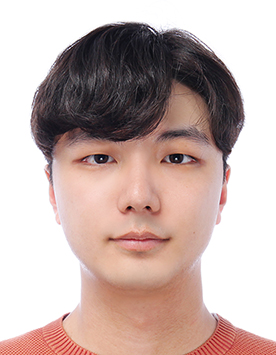
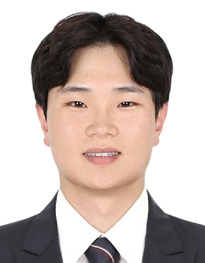
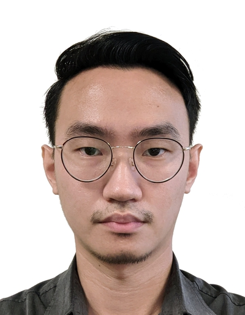
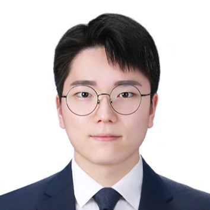
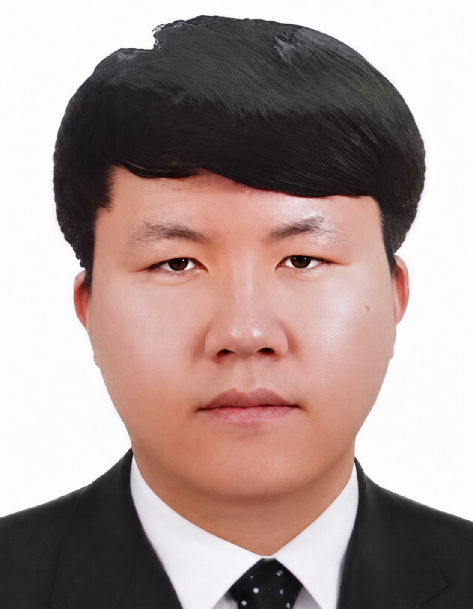

Assoc. Prof. Moon Seung Ki
School of Mechanical and Aerospace Engineering, Nanyang Technological University.
Research leadership in design science, manufacturing intelligence, and sustainable engineering systems.
People
An academic directory of current lab members, organized by role and research position.
Research in advanced manufacturing and intelligent engineering systems.

Research in advanced manufacturing and intelligent engineering systems.

Research in advanced manufacturing and intelligent engineering systems.

Research in advanced manufacturing and intelligent engineering systems.
Contact & Links
Contact & Links

Doctoral research in smart manufacturing, production systems, and data-driven engineering.
Research and project support in engineering design and manufacturing implementation.

Applied research in product development, systems engineering, and prototyping workflows.
Research in advanced manufacturing and intelligent engineering systems.

Doctoral research in smart manufacturing, production systems, and data-driven engineering.